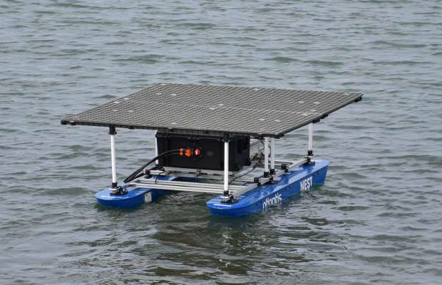
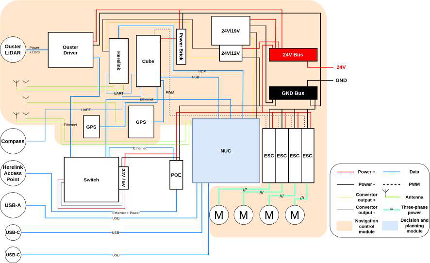

Project Overview
The NEST (Non-stationary Emersed Structure for Takeoff-landing) is a novel catamaran-style Unmanned Surface Vehicle (USV) custom-engineered to serve as a mobile launch and recovery platform for Unmanned Aerial Vehicles (UAVs). Designed to operate autonomously in maritime environments, it acts as a floating base station that provides essential transportation, power, and communication infrastructure to support extended aerial operations.
Built with a highly stable dual-hull configuration, the NEST USV features an integrated 2x2 meter landing pad capable of supporting precise UAV landings even under challenging aquatic conditions. Its holonomic vectorial drive system enables advanced maneuverability and active position-holding, which are critical for executing safe and reliable UAV deployment and retrieval procedures at sea.

Technical Specifications
| Characteristics | Specifications |
|---|---|
| Dimensions | 2.0 m × 2.0 m × 1.3 m |
| Total weight | ~100 kg |
| Available payload | ~200 kg |
| Drive mode | Vectorial drive |
| Max speed | 1.5 m/s |
| On-board sensors | Navigation: GPS, IMU, Compass. Perception: 3D LiDAR, visual and thermal cameras |
| Power supply | LiFePO4 25.6 V @ 200 Ah |
| Power consumption / Operation time | ~3300 W / ~2 h |
Hardware Architecture
The NEST USV utilizes a modular design, distinctly separating the power and electronic subsystems.
- Power Module: Housed in an IP67-rated Peli Air case, it includes a 24V battery, a power switch, a fuse for over-current protection, and a charging port.
- Electronics Module: Located in an IP67 Fibox enclosure, this module integrates an onboard computer, a CubeOrange flight controller, and sensors including GPS, IMUs, a compass, and a LiDAR sensor.
- Actuation & Firmware: The flight controller runs a modified version of ArduSub firmware adapted to support a vectored thruster configuration. This enables holonomic navigation, which is essential for position holding during UAV takeoff and landing.
